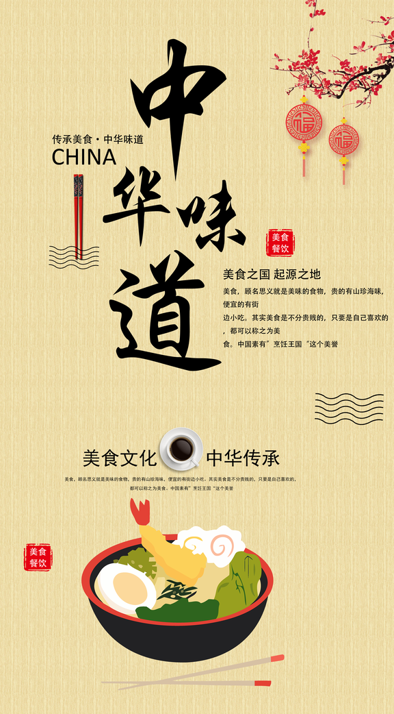
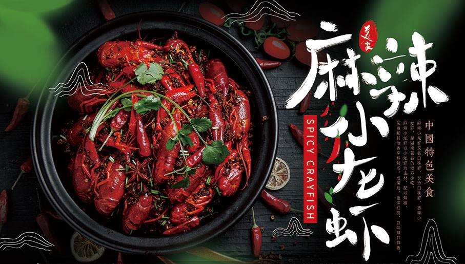
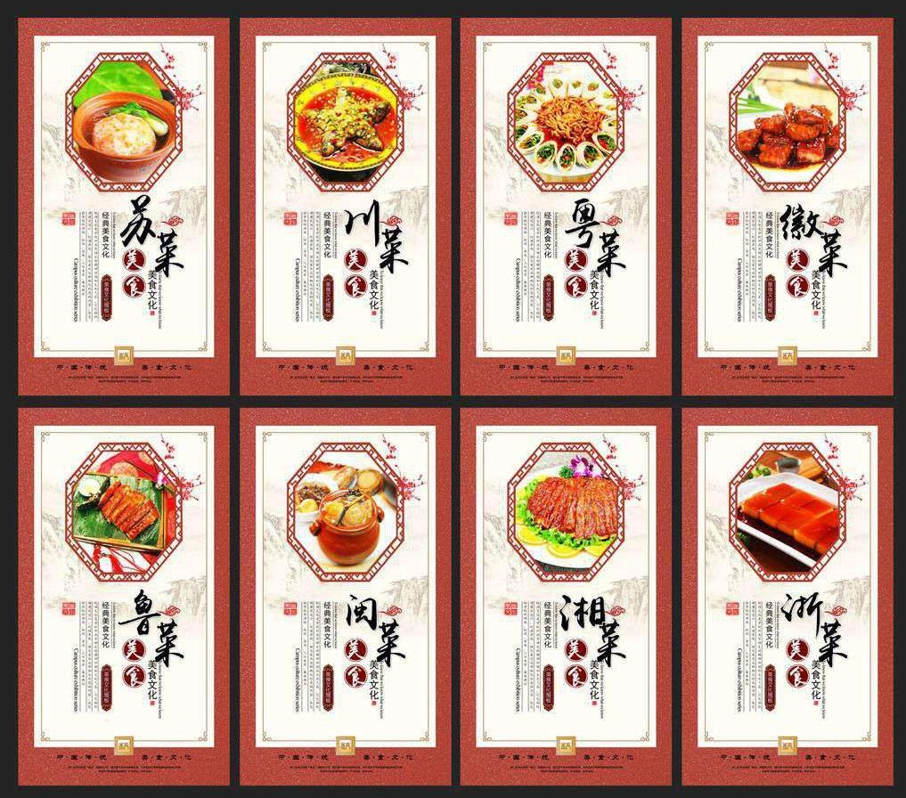
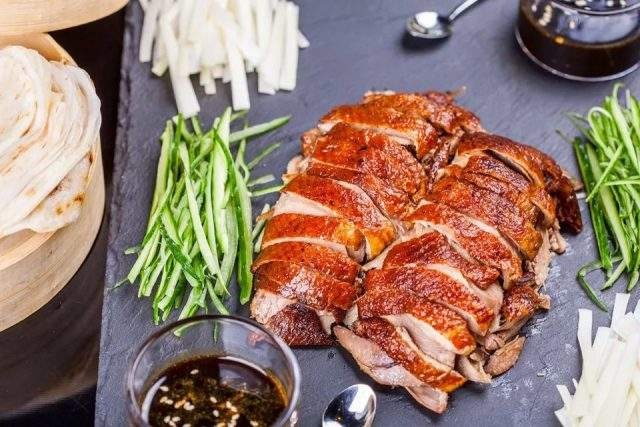

中国特色美食
美食，顾名思义就是美味的食物，中国是一个美食大国，全国各地汇聚了各种各样的特色美食，
各地特色小吃美味多彩，而且流连忘返。
中国的烹饪，不仅技术精湛，而且有讲究菜肴美感的传统，注意食物的色、香、味、形、器的协调一致。对菜肴美感的表现是多方面的，无论是个红萝卜，
还是一个白菜心，都可以雕出各种造型，独树一帜，达到色、香、味、形、美的和谐统一，给人以精神和物质高度统一的特殊享受。其中为社会所公认的最有影响、
最有代表性的有：鲁、川、粤、闽、苏、浙、湘、徽等菜系，即被人们常说的中国“八大菜系”。
生活需要仪式，美食就是对生活美好的向往。


中国八大美食之都
中国绝对称得上是一个美食大国,全国各地汇聚了种类繁多,样式丰富的具有地方色
彩的美食,各地特色小吃美味多姿多彩,而且让人流连忘返,比较有有名的有广州、西安、重庆，北京、成都、长沙、顺德、扬州等城市。
广州作为粤菜的发源地，素有"食在广州"的美誉。重庆被称为是"火锅之都"。北京堪称是美食之都。北京的风味小吃用料讲究、制作精细。
京味小吃的代表有豆汁儿、豆面酥糖、酸梅汤、爆肚等。
......